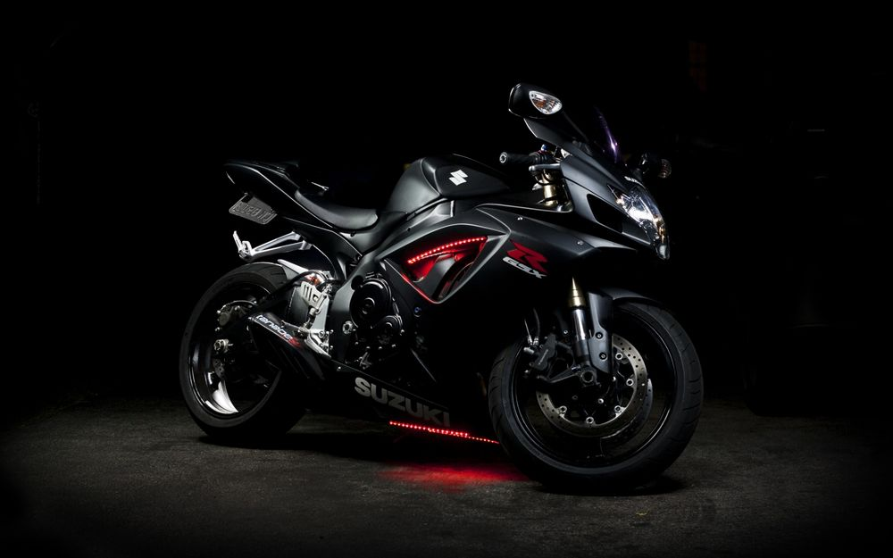

Початок історії

Первый мотоцикл с двигателем внутреннего сгорания (Daimler Reitwagen) был построен в 1885 году в Германии немецкими инженерами Готлибом Даймлером и Вильгельмом Майбахом, впоследствии — «отцами» знаменитых автомобильных марок. Машина создавалась всего лишь как простейший стенд для испытаний изготовленного изобретателями двигателя будущих четырёхколёсных экипажей и напоминала первые беспедальные велосипеды-«костотрясы» начала XIX века. Бензиновый карбюраторный двигатель Даймлера и Майбаха имел мощность 1,5 л. с. и был установлен на деревянной раме с деревянными колесами. При испытаниях аппарат развил скорость 12км/ч. В том же 1885 году Даймлером был получен патент на «повозку для верховой езды с керосиновым двигателем». Таким образом, классический мотоцикл появился раньше классического автомобиля с ДВС (1886). Фирма Даймлера более к конструированию мотоциклов никогда не возвращалась. Исторический мотоцикл сгорел при пожаре в мастерской Даймлера в 1904 году. Однако к столетию мотоцикла, в 1985 г., изготовлено порядка десятка ходовых реплик для демонстрации на шоу и в музеях. В музее концерна Daimler-Benz в Штутгарте выставлена также реплика.